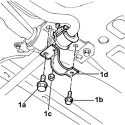
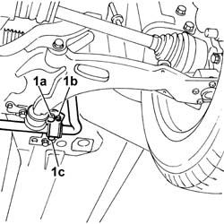

4410C16 front suspension stabilizer bar joint bushes - replace
- Path
- Procedures > 44 SUSPENSION AND WHEELS > 4410 FRONT SUSPENSION > 4410C stabilizer bar and anchorage struts > 4410C16 front suspension stabilizer bar joint bushes - replace
- Kind
- repair procedure (removal / refitting; the operation number is the code)
- Applies to
- all engines; all production periods
- Interactive page
- https://sloeber94.github.io/elrnDB-fDbl/en/#/2584743
Applies to: all engines; all production periods
 Removing
Removing
 Refitting
RefittingPosition the vehicle on a lift and raise it.
Op. 7055B54 PROTECTION/GUARD UNDER ENGINE - R.R..
1. Undo bolt (1a), bolt (1b) and nut (1c) on the right and left side securing the antiroll bar struts (1d) to the front beam.
2. Move the antiroll bar slightly to one side and remove the rubber bushes.

Applies to: all engines; all production periods
Refitting
RemovingFit new rubber bushes.
Screw in the bolts and nut securing the right and left antiroll bar retaining struts to the front beam without tightening.
Carry out final tightening of the antiroll bar fastenings under theoretical design load conditions Design load conditions on the front axle are achieved by ballasting the car (carry out this operation with the wheels fitted and the car on the ground or an appropriate lift). To do this, place 70 kg loads on the car floor in the areas in front of the right and left front seats. Then use a torque wrench to tighten the following bolts.
1. Tighten to torque bolts (1a) securing the rear of the wishbone and the antiroll bar strut to the body and tighten nut (1b) and bolt (1c) securing the antiroll bar to the beam.
 | Fastening | Component | Ø | Value (daNm) |
|---|---|---|---|---|
1a | Bolt | FRONT SUSPENSION LOWER LEVER | M12 x 1.25 | (rear) 12.5 |
| Fastening | Component | Ø | Value (daNm) |
|---|---|---|---|---|
1b | Nut | FRONT ANTI-ROLL BAR | M6 | (rear) 0.8 |
| Fastening | Component | Ø | Value (daNm) |
|---|---|---|---|---|
1c | Bolt | FRONT ANTI-ROLL BAR | M10 x 1.25 | (rear) 7 |

Applies to: all engines; all production periods